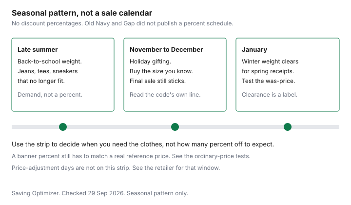

Clothing · Canada
Old Navy and Gap in Canada: Sale Cadence, Promo Stacking and Kids' Basics
A banner that says 40 percent off, or any other percent, is a claim about a regular price. If that regular price was rarely charged, the percent is theatre. Old Navy and Gap in Canada run that kind of banner often enough that the useful habit is a price history, not a hunt for the biggest number. This page says what their own Canadian pages state about returns and brands, and what they do not state about a sale calendar or a price-adjustment window. Season timing without made-up percents is the best-time-to-buy guide.
Key takeaways
- Old Navy and Gap Canada do not publish a sale calendar on the pages checked 29 Sep 2026. Use season logic, and test any "was" price with the ordinary-price rules.
- Rewards and credit offers are offer types. The store pages use a Rewards phone number to look up a receipt. This guide does not cite an earn rate and does not rank cards.
- Kids' and baby basics are a cost-per-wear problem, because children grow out of them. The Ontario rebate, where it applies, is on the kids' clothing guide.
- A promo code follows its own legal line: channel, exclusions, and whether it combines. This guide does not cite a current code.
- Both brands' store pages state free returns and exchanges within 30 days, with final sale excluded, and returns only at the brand of purchase.
Typical promo patterns
State a sale cadence only when the retailer publishes one. The Old Navy Canada and Gap Canada pages checked 29 Sep 2026 do not publish a calendar of percents, a "best week," or a standing discount.
Email subject lines and homepage banners move. Treat them as claims about a reference price. The Competition Bureau's ordinary-price publication, dated 16 October 2009 and checked 29 Sep 2026, says that reference is either a volume test or a time test. More than 50 percent of sales at or above the reference price, over twelve months unless the product is the kind that sells in a shorter season. Or an offer in good faith for more than 50 percent of the time, over six months, again unless the product calls for less. The same web page says the Bureau is reviewing those guidelines after changes to the Competition Act, so confirm the current text before you rely on a fine point.
What you can plan without a percent is the season. Back-to-school is when households replace shorts, jeans, and sneakers that no longer fit. Holiday weeks are when gift clothes move. January is when winter weight has to leave the floor for spring receipts. That is a pattern of demand, not a promise that a given Tuesday is 40 percent off. The month-by-month version, still without made-up percents, is the best-time-to-buy guide. If a coat is the purchase, cost per winter is the coat guide, not the size of the banner.
Keep a simple history for anything you buy more than once. Write the date and the price you paid for a kids' jean or a navy tee. The next banner is a saving only if it beats the prices you have actually seen, not the crossed-out figure alone. A clearance mark is a different sentence. The Bureau's publication says a clearly marked clearance can show an original price and later interim prices when the original price was offered in good faith. A permanent "sale" section that never sells at the higher price is not that story.
Rewards/credit offers: evaluate as offer types only
Old Navy's Bayshore store page, checked 29 Sep 2026, tells you to bring a receipt, an Old Navy Rewards phone number, or the card you paid with. Gap's Outlet Collection Winnipeg page says the same with a Gap Rewards phone number.
That is evidence the brands run a rewards account you can use to find a purchase. It is not an earn rate. This guide does not cite points per dollar, a tier threshold, or a credit-card percent. If a checkout offers a store card or a third-party card, read that offer as an offer type: annual fee if any, interest if you revolve, and the points only on purchases you were going to make. This page does not rank cards.
A discounted retailer gift card is another offer type. The discount is real only on the amount you will spend before the card expires or gathers dust. A cash-back portal is an offer type on an online order. Open the portal, note its rate, and place the order you had already decided. The portal does not change Old Navy's ticket, and it does not create a price adjustment the brand has not published. No partnership is claimed here.
Kids' and baby basics value
Kids' clothes fail the adult cost-per-wear test for a boring reason. The child grows.
A tee that survives 40 washes still leaves the house when the sleeves are short. Baby sleepers leave even sooner. The value question is whether this multipack of plain tees, socks, or leggings will be worn out, or grown out first. If they will be grown out, a lower ticket with a sound seam beats a higher ticket you will donate with the tags off. The method, without a brand ranking, is the basics guide and the cost-per-wear guide.
Read the fibre label the same way you would on an adult shirt. At 5 percent or more of fibre mass, the name and the percentage belong on the label, in French and English. A baby garment that will be washed constantly needs a care label you will follow. The Ontario point-of-sale rebate on qualifying children's clothing, and the size cut-offs that decide it, are the kids' clothing guide. This page does not restate that rebate. Back-to-school quantities, as opposed to a closet full of maybes, are the back-to-school guide.
Do not buy the next size up in a complicated style on the theory that the child will grow into the trend. Buy the next size in a plain shape you already know gets worn. One spare of a uniform-like tee is a plan. Six colours of a novelty graphic is a storage problem.
Online-only codes vs in-store
A code is a contract of a few lines, and the lines disagree with the subject line more often than people expect. Read four things before you build a cart around it.
The channel: online only, stores only, or both. The banner: Old Navy, Gap, or a list. The exclusions: final sale, a named category, gift cards. The stacking line: whether it combines with other offers, including an employee discount if one applies to you. This guide does not cite a live code, a percent, or an end date. An email from a past season is not this week's rule.
If the legal line says the code is not valid in stores, the register will not honour the screenshot. If it names oldnavy.gapcanada.ca and not Gap, do not type it into the other site and hope. One code per checkout is the assumption until the text says otherwise. Buying a second item you do not need, so the code "pays for itself," raises the cost. It does not lower it.
Returns across banners
The brands share a parent and not a return desk. Old Navy's Bayshore page, checked 29 Sep 2026, says free returns and exchanges for in-store and online purchases, within 30 days of the delivery date for online orders or the purchase date in store.
Final-sale items are excluded online and in store. An online order can go back to that store unless it is marked return-by-mail only, sold by a third party, or bought through Shopify, Instagram Shop, or Facebook Shop. An in-store purchase is returned in store, not by mail. Without a receipt, the Rewards phone number or the credit card used at purchase is the lookup.
Gap's page for Outlet Collection Winnipeg, checked the same day, states the same 30-day window and the same final-sale exclusion. It adds a brand wall. You cannot return a Factory or outlet item at a regular Gap location, or the reverse. The page lists Gap, Gap Factory, Old Navy, Athleta, Banana Republic, and Banana Republic Factory as separate for returns. Old Navy's page says the same idea in one line: returns are at the brand where you bought the item. A gift card question is not answered on those pages. See the card.
| Term | Old Navy Canada | Gap Canada |
|---|---|---|
| Price-adjustment window | See retailer | See retailer |
| Return window | 30 days from delivery (online) or purchase (in store). Final sale excluded. In-store buys return in store | 30 days from delivery (online) or purchase (in store). Final sale excluded. In-store buys are not returned by mail |
| Loyalty program | Rewards phone number can look up a receipt. Earn rate: see retailer | Rewards phone number can look up a receipt. Earn rate: see retailer |
| Promo-code stacking | See the current code's own terms | See the current code's own terms |
| Cross-brand returns | Same brand only. A Gap item does not return at Old Navy | Brand of purchase only. Gap and Gap Factory are not interchangeable |
A price adjustment, if the brand offers one, is a later drop in that brand's own price. It is not the same tool as a competitor match. The distinction, and the windows other Canadian retailers do publish, are the price-adjustment guide. Change-of-mind returns as a matter of policy rather than a general right are the return-policy guide.

Sources & date stamps
- Old Navy Canada store page, Bayshore Shopping Centre, 100 Bayshore Drive, Ottawa, checked 29 Sep 2026. Returns and exchanges within 30 days. Final sale excluded. Same-brand returns. Rewards phone number or payment card for a lookup without a receipt.
- Gap Canada store page, Outlet Collection Winnipeg, 555 Sterling Lyon Parkway, checked 29 Sep 2026. Returns and exchanges within 30 days. Final sale excluded. Gap and Gap Factory returns are not interchangeable. Other Gap Inc. banners are listed as separate for returns.
- Competition Bureau, Ordinary Price Claims, 16 October 2009, checked 29 Sep 2026. Volume and time tests. The page says the guidelines are under review after Competition Act changes.
- No Old Navy or Gap Canada page checked 29 Sep 2026 stated a sale calendar, a price-adjustment window, a rewards earn rate, or a cross-brand gift-card rule. Those cells say see retailer.
Frequently asked questions
When does Old Navy Canada have its best sales?
The Old Navy and Gap Canada pages checked 29 Sep 2026 do not publish a sale calendar or a typical percent off. What you can plan is the season: back-to-school weight, holiday gifting, and the January clearance of winter clothes. A percent on a banner still has to survive the ordinary-price tests. The chart on this page is that seasonal pattern. It is not a schedule of discounts.
Does Old Navy Canada give price adjustments?
This guide does not cite a price-adjustment window for Old Navy Canada or for Gap Canada. The customer-service paths exist, and the table says see retailer for that cell. A later drop in the same store's price is the question a price-adjustment policy answers. Read the current policy on the brand's Canadian page before you assume a number of days. The general difference between a match and an adjustment is the price-adjustment guide.
Can I stack promo codes at Gap and Old Navy?
Only if the code you are holding says so. Each offer has its own legal line for channel, exclusions, and combining with other offers. This guide does not cite a current code, and it does not treat an old email as this week's rule. Enter one code, read the refusal if the checkout rejects a second, and do not buy extra units to make a code feel successful.
Are Old Navy kids' basics good value?
They are good value when the cost per wear is low and the fibre label matches what you need, not because a banner says so. Children grow, so the number of wears is shorter than an adult tee. Check seams and the care label, and use the kids' clothing guide for the Ontario point-of-sale rebate and its size cut-offs. This page does not rank Old Navy against Gap or any other kids' brand.
Can I use one brand's gift card at the other?
This guide does not cite a cross-brand gift-card rule. What the store pages do say, checked 29 Sep 2026, is that a return goes back to the brand of purchase. A Gap item is not returned at Old Navy, and a Gap Factory item is not returned at Gap. Ask the cashier, or read the card terms, before you assume one card spends at both.
Researched and drafted with AI assistance and fact-checked against official Canadian sources. How we create content.
Disclosure: Discounted retailer gift cards and cash-back portal offers are offer types. Saving Optimizer may earn a commission if a partner link is added later. No partnership is claimed. A portal or a gift card does not change the price on the tag. Education only.